Cleanliness in fitness studios
// consumer insights data analyst //
Understanding how the owners and attendees of hot yoga studios perceive studio cleanliness and estimating owner and instructor interest in a generic cleaning product.

Challenge: Stakeholders of a generic cleaning brand want to learn what owners, instructors, and attendees at hot yoga studios perceive as “clean” and gauge their purchase interest in a new cleaning product.
Solution: Determine viewpoints of cleanliness in hot yoga studios and predict which cleaning product design supports growth in the fitness studio market.
What do attendees of fitness classes consider to be “clean” when in hot yoga studios?
field research
We started on the ground with stakeholder interviews (studio owners and instructors) to learn about the current cleaning protocols in hot yoga studios, as well as how owners and instructors perceived the cleanliness of the fitness studios during seasons of normal vs. high volumes of fitness class attendance.
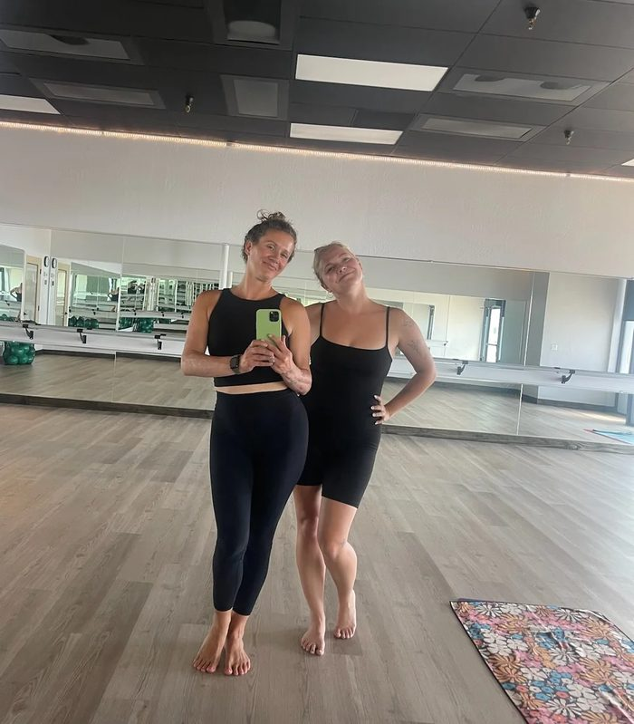
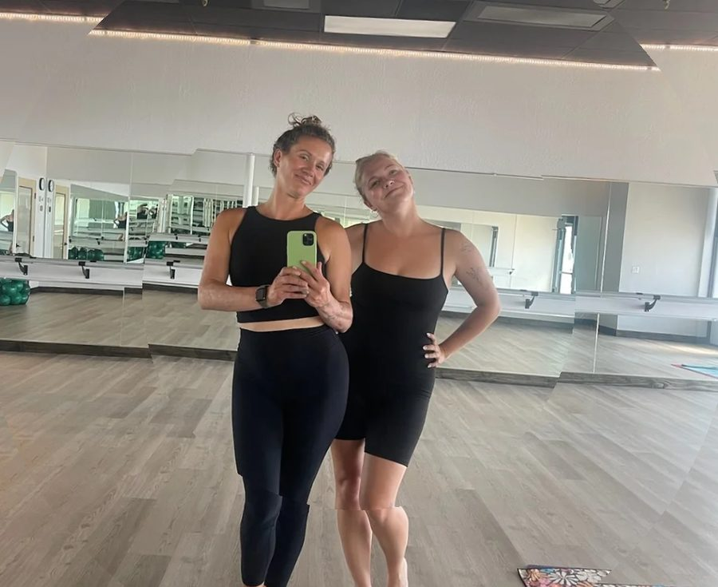
meeting with the users
After defining clear project objectives, we collaborated with UserTesting to recruit 54 attendees (slow flow, intermediate, and advanced) for in-depth interviews to understand how cleanliness is described.
Then, we recruited 163 attendees for surveys to assess the perception of new cleaning product packaging designs.
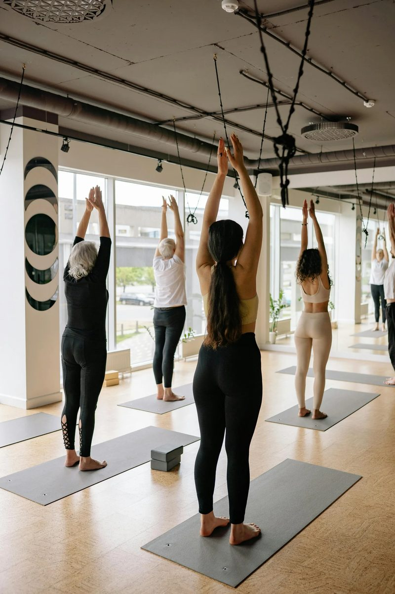
a/b testing
Survey respondents ranked 2x2 comparisons of four new product designs, and we used AI-driven data analytics (Hotjar) to generate heatmaps of what consumers liked and disliked about the product design.
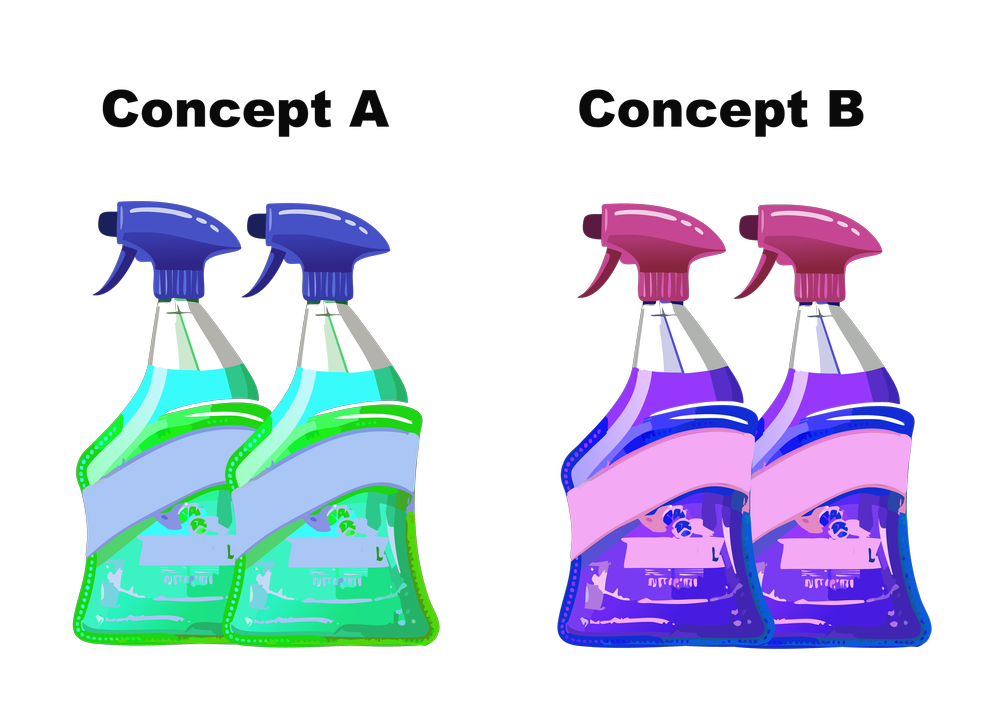
likes and dislikes
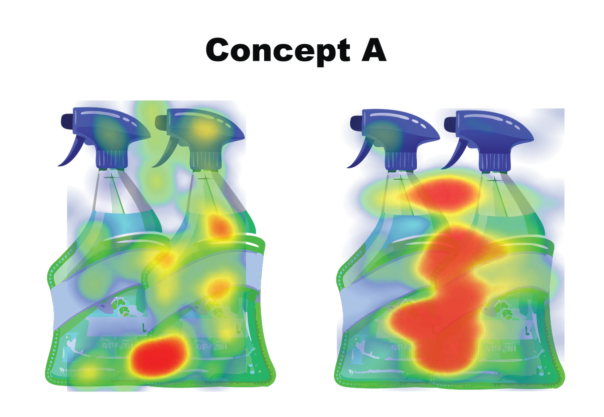
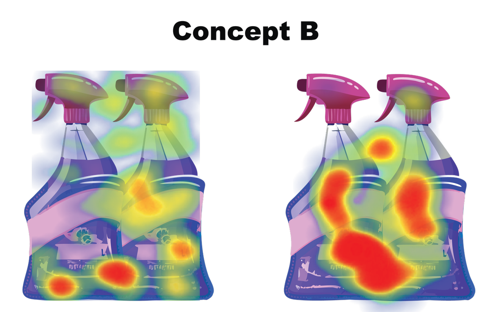
survey analysis
Then, we used natural language processing (NLP) models to determine word frequencies and estimate consumer interest in the products.
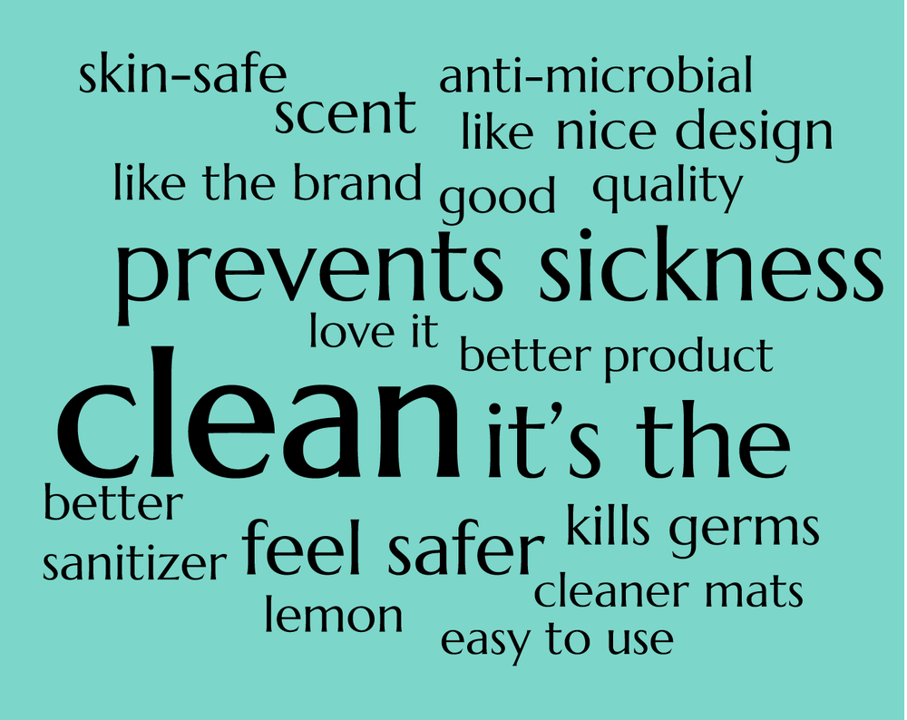
Which product do all stakeholders find the most useful for maintaining studio cleanliness?
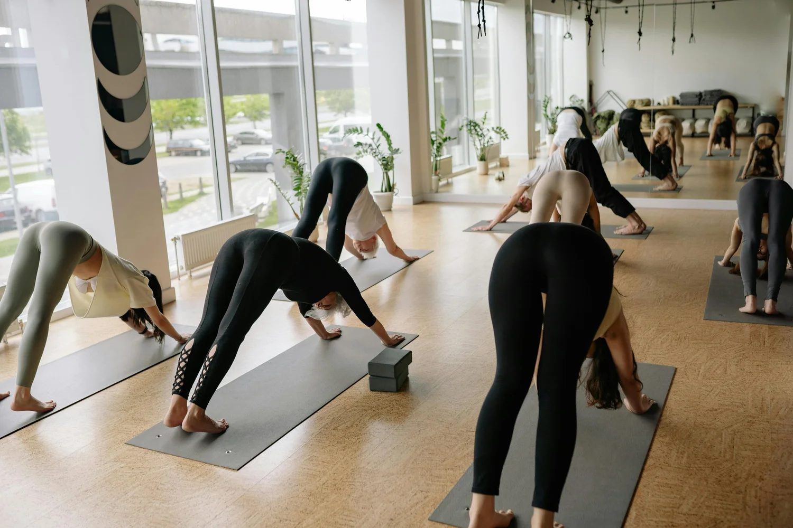
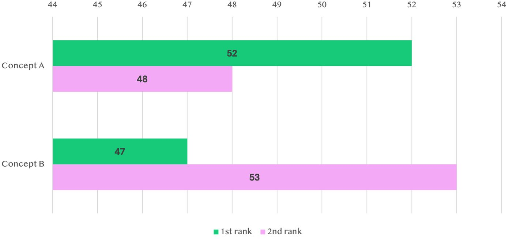
usability testing
We donated cleaning products to fitness studios and asked fitness instructors to walk us through their method of using Concept A
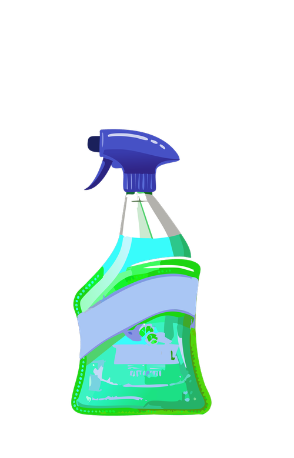
Intuitive walkthrough
- Task 1: Ask the user to unpack and identify what the product is
- Task 2: Ask the user to prepare the product for use
- Task 3: Ask the user to disinfect the yoga mats and floors
- Task 4: Ask the user to interpret the instructions for dwell time
- Task 5: Ask the user to wipe the product-applied surfaces
- Task 6: Ask the user to store the product after use
Survey results show that Concept A is preferred by all stakeholders in fitness studios
insights
Concept A scored the highest for
- preventing sickness,
- promoting cleanliness,
- feeling safer in group settings,
- and purchase interest
“After Covid-19, I enjoy attending fitness classes when studio owners prioritize cleaning after each class.”
“I trust Concept A brand to kill germs”
“I love Concept A’s brand and quality”
“I feel safer attending group fitness classes when I know they use Concept A brand”
outcomes
Recommended that stakeholders proceed with Concept A, as it promotes a safer and cleaner atmosphere in group settings among attendees and has the potential to generate product growth in fitness studios.
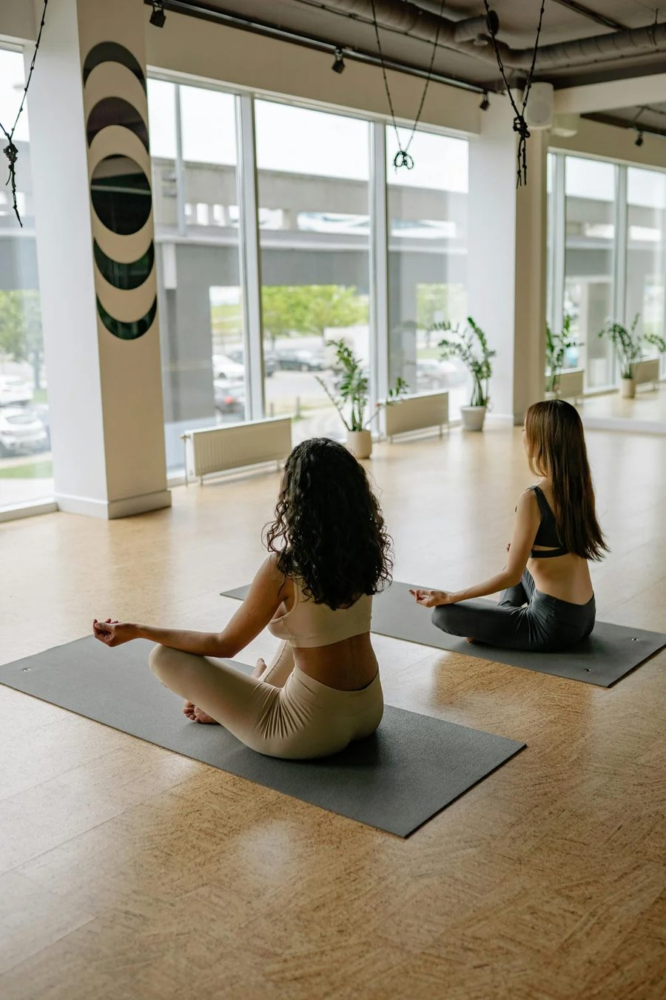
“When I smell Concept A, I know the studio is cleaner”
*Note: Product names have been changed as this is under NDA